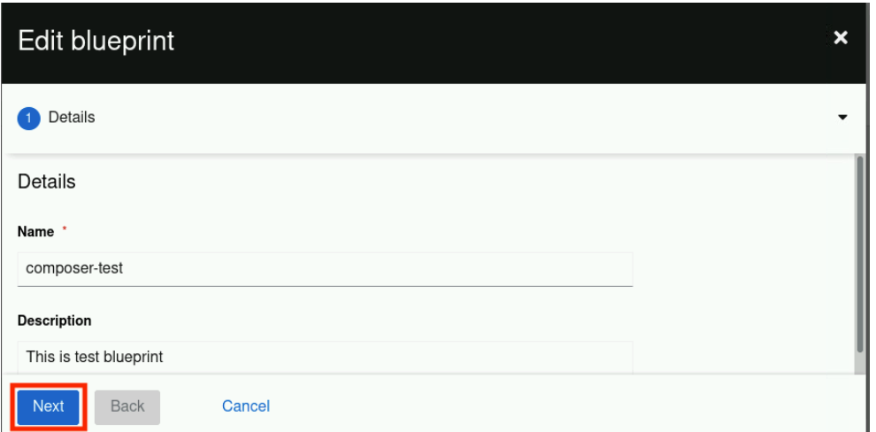
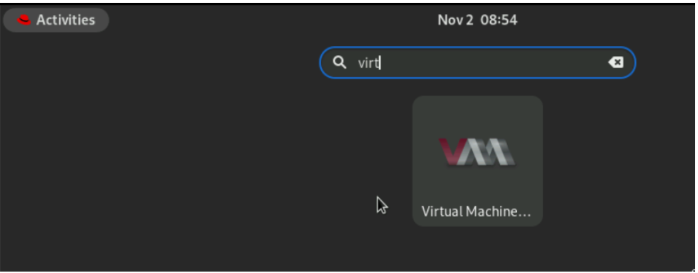

Guided Exercise: Modify an existing blueprint and create another image
Modify a blueprint by using the web console and create an image from the updated blueprint.
Outcomes
-
Modify a blueprint by using the web console and create an image from the updated blueprint.
-
Open the
composer-testblueprint for editing. -
Remove the
bisonpackage. -
Add these packages:
findutils, diffutils, pciutils -
Create a QEMU qcow2 Image (.qcow2) using the
composer-testblueprint.
-
Instructions
-
Edit the
composer-testblueprint.-
Access the image builder dashboard in the RHEL web console. Open https://localhost:9090/ in the Firefox browser on the
workstationsystem. -
If you are not already logged in, log in by using the username
studentand by entering thestudentpassword. -
Click
Image Builderon the left sidebar and then click theBlueprintstab.-
Click the
composer-testblueprint.
-
-
Click Edit blueprint.
-
Click Next.
 -
Select the
bisonpackage and click < to remove it. -
Verify that no packages are present in the blueprint by matching your screen with the following screenshot.
-
-
Add the
findutils, diffutilsandpciutilspackages to blueprint.-
Search the packages one by one and add them.
-
Click Next.
-
-
In Review section, click Save.
-
In
composer-testblueprint, select Packages tab to verify that the packages are added.
-
-
Create a QEMU
qcow2Image (.qcow2) using the composer-test blueprint.-
Click Create image. In the Create image dialog, set the Image output type to QEMU Image (
.qcow2) and click Next. -
In the Review section, click Create.
-
The image is added to the queue, select the
Imagestab to verify the image output Type and the image Status.Note: Wait for the image creation to finish before proceeding, it takes about 5 minutes. To verify the status from a command line, switch to the Terminal and run the composer-cli compose list command repeatedly:
[student@workstation ~]$ composer-cli compose list ID Status Blueprint Version Type d7c11834-cc76-474d-9ace-68a071cf89ff RUNNING composer-test 0.0.1 qcow2 838abcf7-a455-4388-b51e-0fea3d406786 FINISHED composer-test 0.0.0 tar
[student@workstation ~]$ composer-cli compose list ID Status Blueprint Version Type 838abcf7-a455-4388-b51e-0fea3d406786 FINISHED composer-test 0.0.0 tar d7c11834-cc76-474d-9ace-68a071cf89ff FINISHED composer-test 0.0.1 qcow2
Notice that the version has updated to 0.0.1 as you modified the existing blueprint.
-
Switch to the Firefox browser and refresh the web page. Click the Images tab and verify that the image status is Ready.
-
-
Run the grading script to verify your work. [student@workstation ~]$ lab grade imagebuilder-modify Grading lab. SUCCESS Checking lab systems …output omitted… Overall lab grade: PASS
-
Optionally, download the
qcow2image and create a VM.-
When the image build is finished, the Download image button is enabled. Download the image by clicking Download image for the
qcow2image. Choose Save File and click OK. -
Switch to the terminal and list the downloaded image to confirm the download.
[student@workstation ~]$ ls ~/Downloads/ d7c11834-cc76-474d-9ace-68a071cf89ff-disk.qcow2
-
The file name in the preceding output is different on your system.
-
-
Install the necessary packages to enable the workstation machine to host virtual machines. Enter
studentas the sudo password when prompted. [student@workstation ~]$ sudo yum install -y virt-manager libvirt libvirt-client qemu-kvm qemu-img virt-install virt-viewer [sudo] password for student: -
Enable and start the
libvirtdservice.[student@workstation ~]$ sudo systemctl enable --now libvirtd Created symlink /etc/systemd/system/multi-user.target.wants/libvirtd.service → /usr/lib/systemd/system/libvirtd.service. Created symlink /etc/systemd/system/sockets.target.wants/libvirtd.socket → /usr/lib/systemd/system/libvirtd.socket. Created symlink /etc/systemd/system/sockets.target.wants/libvirtd-ro.socket → /usr/lib/systemd/system/libvirtd-ro.socket.
-
Copy the downloaded image to the default pool.
[student@workstation ~]$ sudo cp /home/student/Downloads/d7c11834-cc76-474d-9ace-68a071cf89ff-disk.qcow2 /var/lib/libvirt/images/
-
In the preceding command, make sure to replace the file name as visible in your system.
-
-
Test the image using the following command. The commands creates a virtual machine with the name RHEL9Lab2.
[student@workstation ~]$ sudo virt-install --name RHEL9Lab2 --memory 2048 --vcpus 2 --os-variant rhel9.0 --import --disk /var/lib/libvirt/images/d7c11834-cc76-474d-9ace-68a071cf89ff-disk.qcow2 ...output omitted... Starting install... Creating domain...
Domain is still running. Installation may be in progress. Waiting for the installation to complete.
-
You can use ctrl+c to quit out of the running command.
-
-
On the workstation GUI, search for Virtual Machine Manager.
-
Open the Virtual Machine Manager application. Enter the student password and click Authenticate.
-
Verify that the RHEL9Lab2 VM is visible.
-
Click the open button to view the console.
-
This confirms that the image you built works.
-
You cannot log in at this point, the login settings are configured in the next section.
-
Do not delete the
composer-testblueprint as later exercises use it.
-
-